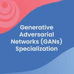
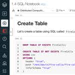
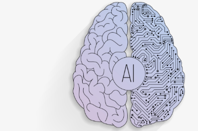
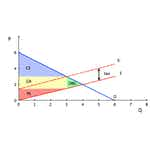
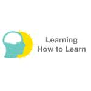

Working & Study
Experience
As an innovative & dedicated data professional
Extracting unique & valuable insights from data

AI and Data Science Intern
JPMorgan Chase & Co.Consumer & Community Banking (CCB) Team
Initiate the effort for a data-centric Images Labeling platform to push forward a new model training paradigm, aiming to improve model accuracy with greatest efficiency following a MLOps mindset. The platform is designed with Figma and prototyped with Angular;
Research multi-label computer vision algorithm to optimize the model in our defects detection machine prototype;
Architect new data analytics features on our IoT platforms to help our customers with their digital transformation and enable better business insight extraction with descriptive & predictive modeling of the digital twins.
- My fourth internship
- Summer 2022
- Duration: 2.5 months
- Wilmington, DE

Summer Research Fellow
Carnegie Mellon UniversityDepartment of Statistics and Data Science
Initiate the effort for a data-centric Images Labeling platform to push forward a new model training paradigm, aiming to improve model accuracy with greatest efficiency following a MLOps mindset. The platform is designed with Figma and prototyped with Angular;
Research multi-label computer vision algorithm to optimize the model in our defects detection machine prototype;
Architect new data analytics features on our IoT platforms to help our customers with their digital transformation and enable better business insight extraction with descriptive & predictive modeling of the digital twins.
- My third internship
- Summer 2021
- Duration: 2 months
- Pittsburgh, PA

Data Science Intern
Rolls-Royce North AmericaCivil Aerospace
Initiate the effort for a data-centric Images Labeling platform to push forward a new model training paradigm, aiming to improve model accuracy with greatest efficiency following a MLOps mindset. The platform is designed with Figma and prototyped with Angular;
Research multi-label computer vision algorithm to optimize the model in our defects detection machine prototype;
Architect new data analytics features on our IoT platforms to help our customers with their digital transformation and enable better business insight extraction with descriptive & predictive modeling of the digital twins.
- My second internship
- Fall 2019 - Spring 2020
- Duration: 10 months
- Remote

Information Security Intern
LPL Financial Holdings, Inc.Information Security Intern
Initiate the effort for a data-centric Images Labeling platform to push forward a new model training paradigm, aiming to improve model accuracy with greatest efficiency following a MLOps mindset. The platform is designed with Figma and prototyped with Angular;
Research multi-label computer vision algorithm to optimize the model in our defects detection machine prototype;
Architect new data analytics features on our IoT platforms to help our customers with their digital transformation and enable better business insight extraction with descriptive & predictive modeling of the digital twins.
- My first internship
- Summer 2019
- Duration: 3 months
- La Jolla, CA

Assistant Research
UCSD, CogTools LabReceive funding from HDSI to participate in a research project under PI Judith Fan’s mentorship to study intuitive physics from the visual perception in humans and machines, primarily working on the data analysis and designing 3D stimulus of non-rigid physical interaction. “Physion: Evaluating Physical Prediction from Vision in Humans and Machines”(accepted by NeurIPS 2021, datasets and benchmark track), which studies the correspondence between state-of-art computer vision model and real-human performance on physical inference tasks.
- Department-funded Research Project
- Jan 2021 - Present
- Duration: 7 months +
- San Diego, California, United States
Recent
Research
I am currenly mentored by Prof. Fan
in Cognitive Tools Lab
With funding from UCSD HDSI Scholarship

Physion: Evaluating Physical Prediction from Vision in Humans and Machines (Preprint)
- Accepted by NeurIPS 2021 (Datasets & Benchmarks track) [ GitHub ]
Abstract:
While machine learning algorithms excel at many challenging visual tasks, it is
unclear that they can make predictions about commonplace real world physical events.
Here, we present a visual and physical prediction benchmark that precisely measures
this capability. In realistically simulating a wide variety of physical phenomena --
rigid and soft-body collisions, stable multi-object configurations, rolling and
sliding, projectile motion -- our dataset presents a more comprehensive challenge
than
existing benchmarks. Moreover, we have collected human responses for our stimuli so
that
model predictions can be directly compared to human judgments. We compare an array
of
algorithms -- varying in their architecture, learning objective, input-output
structure, and
training data -- on their ability to make diverse physical predictions. We find that
graph
neural networks with access to the physical state best capture human behavior,
whereas
among models that receive only visual input, those with object-centric
representations or pretraining do best but fall far short of human accuracy. This
suggests that
extracting physically meaningful representations of scenes is the main bottleneck to
achieving human-like
visual prediction. We thus demonstrate how our benchmark can identify areas for
improvement and measure
progress on this key aspect of physical understanding.


Skill
Set
This section shows knowledge I have learned so far
Via college & online courses I took
-
Machine Learning Engineering for Production (MLOps) Specialization (1/4) - (In progress)
DeepLearning.AICourse 1 | Course 2 | Course 3 | Course 4
About this SpecializationUnderstanding machine learning and deep learning concepts is essential, but if you’re looking to build an effective AI career, you need production engineering capabilities as well.
Effectively deploying machine learning models requires competencies more commonly found in technical fields such as software engineering and DevOps. Machine learning engineering for production combines the foundational concepts of machine learning with the functional expertise of modern software development and engineering roles.
The Machine Learning Engineering for Production (MLOps) Specialization covers how to conceptualize, build, and maintain integrated systems that continuously operate in production. In striking contrast with standard machine learning modeling, production systems need to handle relentless evolving data. Moreover, the production system must run non-stop at the minimum cost while producing the maximum performance. In this Specialization, you will learn how to use well-established tools and methodologies for doing all of this effectively and efficiently.
In this Specialization, you will become familiar with the capabilities, challenges, and consequences of machine learning engineering in production. By the end, you will be ready to employ your new production-ready skills to participate in the development of leading-edge AI technology to solve real-world problems.
Applied Learning Project
By the end, you'll be ready to
- Design an ML production system end-to-end: project scoping, data needs, modeling strategies, and deployment requirements
- Establish a model baseline, address concept drift, and prototype how to develop, deploy, and continuously improve a productionized ML application
- Build data pipelines by gathering, cleaning, and validating datasets
- Implement feature engineering, transformation, and selection with TensorFlow Extended
- Establish data lifecycle by leveraging data lineage and provenance metadata tools and follow data evolution with enterprise data schemas
- Apply techniques to manage modeling resources and best serve offline/online inference requests
- Use analytics to address model fairness, explainability issues, and mitigate bottlenecks
- Deliver deployment pipelines for model serving that require different infrastructures
- Apply best practices and progressive delivery techniques to maintain a continuously operating production system
-

Generative Adversarial Networks (GANs) Specialization (0/3) - (In progress)
DeepLearning.AICourse 1 | Course 2 | Course 3
About this Specialization
About GANsGenerative Adversarial Networks (GANs) are powerful machine learning models capable of generating realistic image, video, and voice outputs.
Rooted in game theory, GANs have wide-spread application: from improving cybersecurity by fighting against adversarial attacks and anonymizing data to preserve privacy to generating state-of-the-art images, colorizing black and white images, increasing image resolution, creating avatars, turning 2D images to 3D, and more.
About Courses
The DeepLearning.AI Generative Adversarial Networks (GANs) Specialization provides an exciting introduction to image generation with GANs, charting a path from foundational concepts to advanced techniques through an easy-to-understand approach. It also covers social implications, including bias in ML and the ways to detect it, privacy preservation, and more.
Build a comprehensive knowledge base and gain hands-on experience in GANs. Train your own model using PyTorch, use it to create images, and evaluate a variety of advanced GANs.
Applied Learning Project
Course 1: In this course, you will understand the fundamental components of GANs, build a basic GAN using PyTorch, use convolutional layers to build advanced DCGANs that processes images, apply W-Loss function to solve the vanishing gradient problem, and learn how to effectively control your GANs and build conditional GANs.
Course 2: In this course, you will understand the challenges of evaluating GANs, compare different generative models, use the Fréchet Inception Distance (FID) method to evaluate the fidelity and diversity of GANs, identify sources of bias and the ways to detect it in GANs, and learn and implement the techniques associated with the state-of-the-art StyleGAN.
Course 3: In this course, you will use GANs for data augmentation and privacy preservation, survey more applications of GANs, and build Pix2Pix and CycleGAN for image translation. -
Google Data Analytics Specialization (8/8) - Certificate
GoogleCourse 1 | Course 2 | Course 3 | Course 4 | Course 5 | Course 6 | Course 7 | Course 8
About this Professional Certificate
Prepare for a new career in the high-growth field of data analytics. Get professional training designed by Google and have the opportunity to connect with top employers. Data analytics is the collection, transformation, and organization of data in order to draw conclusions, make predictions, and drive informed decision making. Over 8 courses, gain in-demand skills that prepare you for an entry-level job. You’ll learn from Google employees whose foundations in data analytics served as launchpads for their own careers. At under 10 hours per week, you can complete the certificate in less than 6 months. You’ll prepare yourself for jobs that include junior or associate data analyst, database administrator, and more.- Skills you’ll gain will include: Data cleaning, problem solving, critical thinking, data ethics, and data visualization
- Platforms and tools you will learn include: Presentations, Spreadsheets, SQL, Tableau and R Programming -
Organizational Change and Culture for Adopting Google Cloud Specialization (4/4) - Certificate
Google CloundCourse 1 | Course 2 | Course 3 | Course 4
About this Professional Certificate
Understanding organizational adoption of Google Cloud. This series of courses starts with the basics of digital transformation and Google Cloud and then builds on that knowledge to understand the culture and change management that organizations use to benefit from Google Cloud. -
Google Cloud Digital Leader Training Professional Certificate (4/4) - Certificate
Google CloundCourse 1 | Course 2 | Course 3 | Course 4
About this Professional Certificate
The Cloud Digital Leader training consists of a course series designed to give you foundational knowledge about cloud technology and data. This training also offers an overview of Google Cloud products and services that enable organizations’ digital transformation. This training will empower you and your team(s) to contribute to cloud-related business initiatives across your organization.This training builds knowledge in these areas:
- General cloud knowledge
- General Google Cloud knowledge
- Google Cloud products and services
- Digital transformation, data, and AI/ML
- Modernizing company IT infrastructure and applications -
Machine Learning - Certificate
Stanford University
About this Course
Machine learning is the science of getting computers to act without being explicitly programmed. In the past decade, machine learning has given us self-driving cars, practical speech recognition, effective web search, and a vastly improved understanding of the human genome. Machine learning is so pervasive today that you probably use it dozens of times a day without knowing it. Many researchers also think it is the best way to make progress towards human-level AI. In this class, you will learn about the most effective machine learning techniques, and gain practice implementing them and getting them to work for yourself. More importantly, you'll learn about not only the theoretical underpinnings of learning, but also gain the practical know-how needed to quickly and powerfully apply these techniques to new problems. Finally, you'll learn about some of Silicon Valley's best practices in innovation as it pertains to machine learning and AI.This course provides a broad introduction to machine learning, datamining, and statistical pattern recognition. Topics include: (i) Supervised learning (parametric/non-parametric algorithms, support vector machines, kernels, neural networks). (ii) Unsupervised learning (clustering, dimensionality reduction, recommender systems, deep learning). (iii) Best practices in machine learning (bias/variance theory; innovation process in machine learning and AI). The course will also draw from numerous case studies and applications, so that you'll also learn how to apply learning algorithms to building smart robots (perception, control), text understanding (web search, anti-spam), computer vision, medical informatics, audio, database mining, and other areas.
-
AI For Everyone - Certificate
DeepLearning.AI
About this Course
AI is not only for engineers. If you want your organization to become better at using AI, this is the course to tell everyone--especially your non-technical colleagues--to take.In this course, you will learn:
- The meaning behind common AI terminology, including neural networks, machine learning, deep learning, and data science
- What AI realistically can--and cannot--do
- How to spot opportunities to apply AI to problems in your own organization
- What it feels like to build machine learning and data science projects
- How to work with an AI team and build an AI strategy in your company
- How to navigate ethical and societal discussions surrounding AIThough this course is largely non-technical, engineers can also take this course to learn the business aspects of AI.
-
Introduction to Augmented Reality and ARCore - Certificate
Google AR & VR
About this Course
This class will teach you the fundamentals of augmented reality (AR), and how to build an AR experience using ARCore. Through the four week course, you'll learn:- How to identify different types of AR experiences
- Tools and platforms used in the AR landscape
- What makes AR feel "real"
- Popular use cases for AR
- How to create an AR use flow
- How AR experiences work
- Tools like Google Poly and Unity to build AR experiences
- Next steps to start building an AR experience using ARCore and other tools
This course will break down complex AR concepts to make them easy to understand, while also sharing expert tips and knowledge from Daydream's ARCore team. The course is great for beginners who are just getting started with AR or ARCore.
-
VR and 360 Video Production - Certificate
Google AR & VR
About this Course
Welcome to the Google AR & VR Virtual Reality and 360 video production course! Our mission is to give you the skills you need to get started with your first VR project.This course will introduce you to Virtual Reality and 360 video production, guiding you through a step-by-step process to create VR content.
-
Data Science Specialization (5/10) - (In progress)
Johns Hopkins UniversityCourse 1 | Course 2 | Course 3 | Course 4 | Course 5 | Course 6 | Course 7 | Course 8 | Course 9 | Course 10
About this Specialization
- Ask the right questions, manipulate data sets, and create visualizations to communicate results.
This Specialization covers the concepts and tools you'll need throughout the entire data science pipeline, from asking the right kinds of questions to making inferences and publishing results. In the final Capstone Project, you’ll apply the skills learned by building a data product using real-world data. At completion, students will have a portfolio demonstrating their mastery of the material. -

Distributed Computing with Spark SQL - (In progress)
University of California, Davis
About this Course
This course is all about big data. It’s for students with SQL experience that want to take the next step on their data journey by learning distributed computing using Apache Spark. Students will gain a thorough understanding of this open-source standard for working with large datasets. Students will gain an understanding of the fundamentals of data analysis using SQL on Spark, setting the foundation for how to combine data with advanced analytics at scale and in production environments. The four modules build on one another and by the end of the course you will understand: the Spark architecture, queries within Spark, common ways to optimize Spark SQL, and how to build reliable data pipelines.The first module introduces Spark and the Databricks environment including how Spark distributes computation and Spark SQL. Module 2 covers the core concepts of Spark such as storage vs. compute, caching, partitions, and troubleshooting performance issues via the Spark UI. It also covers new features in Apache Spark 3.x such as Adaptive Query Execution. The third module focuses on Engineering Data Pipelines including connecting to databases, schemas and data types, file formats, and writing reliable data. The final module covers data lakes, data warehouses, and lakehouses. Students build production grade data pipelines by combining Spark with the open-source project Delta Lake. By the end of this course, students will hone their SQL and distributed computing skills to become more adept at advanced analysis and to set the stage for transitioning to more advanced analytics as Data Scientists.
-
SQL for Data Science - Certificate
University of California, Davis
About this Course
As data collection has increased exponentially, so has the need for people skilled at using and interacting with data; to be able to think critically, and provide insights to make better decisions and optimize their businesses. This is a data scientist, “part mathematician, part computer scientist, and part trend spotter” (SAS Institute, Inc.). According to Glassdoor, being a data scientist is the best job in America; with a median base salary of $110,000 and thousands of job openings at a time. The skills necessary to be a good data scientist include being able to retrieve and work with data, and to do that you need to be well versed in SQL, the standard language for communicating with database systems.This course is designed to give you a primer in the fundamentals of SQL and working with data so that you can begin analyzing it for data science purposes. You will begin to ask the right questions and come up with good answers to deliver valuable insights for your organization. This course starts with the basics and assumes you do not have any knowledge or skills in SQL. It will build on that foundation and gradually have you write both simple and complex queries to help you select data from tables. You'll start to work with different types of data like strings and numbers and discuss methods to filter and pare down your results.
You will create new tables and be able to move data into them. You will learn common operators and how to combine the data. You will use case statements and concepts like data governance and profiling. You will discuss topics on data, and practice using real-world programming assignments. You will interpret the structure, meaning, and relationships in source data and use SQL as a professional to shape your data for targeted analysis purposes.
-
BMM Summer Course 2021
MIT CBMM on YouTube
About this Course
The basis of intelligence – how the brain produces intelligent behavior and how we may be able to replicate intelligence in machines – is arguably the greatest problem in science and technology. To solve it, we will need to understand how human intelligence emerges from computations in neural circuits, with rigor sufficient to reproduce similar intelligent behavior in machines. Success in this endeavor ultimately will enable us to understand ourselves better, to produce smarter machines, and perhaps even to make ourselves smarter. Today’s AI technologies, such as Watson and Siri, are impressive, but their domain specificity and reliance on vast numbers of labeled examples are obvious limitations; few view this as brain-like or human intelligence. The synergistic combination of cognitive science, neurobiology, engineering, mathematics, and computer science holds the promise to build much more robust and sophisticated algorithms implemented in intelligent machines. The goal of this course is to help produce a community of leaders that is equally knowledgeable in neuroscience, cognitive science, and computer science and will lead the development of true biologically inspired AI.
The class discussions will cover a range of topics, including:
- Neuroscience: neurons and models
- Computational vision
- Biological vision
- Machine learning
- Bayesian inference
- Planning and motor control
- Memory
- Social cognition
- Inverse problems & well-posedness
- Audition and speech processing
- Natural language processing
-
Hugging Face Deep Reinforcement Learning Class - (In progress)
Hugging Face
About this Course
📖 Study Deep Reinforcement Learning in theory and practice.
🧑💻 Learn to use famous Deep RL libraries such as Stable Baselines3, RL Baselines3 Zoo, and RLlib.
🤖 Train agents in unique environments such as SnowballFight, Huggy the Doggo 🐶, and classical ones such as Space Invaders and PyBullet.
💾 Publish your trained agents in one line of code to the Hugging Face Hub. But also download powerful agents from the community.
🏆 Participate in challenges where you will evaluate your agents against other teams.
🖌️🎨 Learn to share your own environments made with Unity and Godot.
-
DeepMind | UCL
DeepMind on YouTube
Courses taken
- DeepMind x UCL | Deep Learning Lecture Series 2020 - (In progress)
- DeepMind x UCL | Reinforcement Learning Lecture Series 2021 - (In progress)
-
Neuromatch Academy 2021 - (In progress)
Neuromatch Academy
About this Course
Neuromatch Academy aims to introduce traditional and emerging tools of computational neuroscience and deep learning to trainees with an emphasis on theory and model building.
This 3-week of content for NMA 2020, in the form of lectures and interactive coding tutorials hosted in Google Colab, gives an introduction in topics, including: Model Types, Modeling Practice, Model Fitting, Generalized Linear Models, Dimensionality Reduction, Deep Learning, Linear Systems, Biological Neuron Models, Dynamic Networks, Bayesian Decisions, Hidden Dynamics, Optimal Control,Reinforcement Learning, Network Causality -
MIT OCW
MIT OpenCourseWare
Courses taken
- Fundamentals of Systems Engineering (MIT 16.842)
- Introduction to Computational Thinking (MIT 18.S191 aka 6.S083 aka 22.S092) - (In progress)
- Performance Engineering of Software Systems (MIT 6.172) - (In progress)
- Computation Structures (MIT 6.004) - (In progress)
- Introduction to Deep Learning (MIT 6.S191) - (In progress)
- Matrix Methods in Data Analysis, Signal Processing, and Machine Learning (MIT 18.065) - (In progress)
- Deep Learning for Self-Driving Cars (MIT 6.S094) - (In progress)
- Introduction to Computer Graphics (MIT 6.837) - (In progress)
- Shape Analysis (MIT 6.838) - (In progress)
- Underactuated Robotics (MIT 6.832)- (In progress)
- Robotic Manipulation (MIT 6.800/6.843)- (In progress)
-
Stanford Online
Stanford Online
Courses taken
- AI Safety Seminar (Stanford CS521)
- Stanford Seminar - Transformers United (Stanford CS25)
- Convolutional Neural Networks for Visual Recognition (Stanford CS231n)
- Natural Language Processing with Deep Learning (Stanford CS224N) - (In progress)
- Deep Multi-Task and Meta Learning (Stanford CS330) - (In progress)
-
University of California, San Diego
UCSD CSE
Courses taken
- Computer Graphics (UCSD CSE 167) - (In progress)
- Rendering (UCSD CSE 168) - (In progress)
- Introduction to Computer Vision I (UCSD CSE 152A)
- 3D ML (UCSD CSE 291) - (In progress)
- ML for Robotics (UCSD CSE 291) - (In progress)
-
University of California, Berkeley
From Prof. Pieter Abbeel
Courses taken
- Deep Unsupervised Learning (Berkeley CS294-158-SP20) - (In progress)
- Advanced Robotics (Berkeley CS287-FA19) - (In progress)
- Foundations of Deep Reinforcement Learning (6-lecture series) - (In progress) -
Carnegie Mellon University
From Prof. Keenan Crane
Courses taken
- Discrete Differential Geometry (CMU 15-458/858) - (In progress)
- Computer Graphics (CMU 15-462/662) - (In progress)
-
University of Texas at Austin
From Prof. Constantine Caramanis
Courses taken
- Optimization Algorithms - (In progress)
- Combinatorial Optimization - (In progress)
-

Summary
Languages, Tools & Packages- Python, PyTorch, R, SQL, C#, Java, JS, HTML, CSS, Julia
- Tableau, Pandas, Angular, Figma, D3.js
- AWS, DASK, PostgreSQL, SQLite
- Numpy, Scikit-learn, Beautiful Soup, Git
Data Science & AI/ML ConceptsData Science Life Cycle, Data Visualization, Scalable Analytics, Web Scraping & API, Various Supervised & Unsupervised Models, CNN, RNN, GANs, MLOps, AR/ VR, Responsible AI, Recommender System, Data Mining, Database Management, Deep unsupervised learning, Robotics, Computer graphics, Rendering
Software Development ConceptsAlgorithms and complexity, Data Structures, Graph Theory, Regex, DevOps, Product Development & Management, User-centric Design, Scalable and Parallel Computing, Cloud Computing, ML/ DL Systems & Tools
Mathematical ConceptsProbabilistic Reasoning, Combinatorics, Discrete & Continuous Probability, Stochastic Process, Linear Algebra, Statistics Modeling, Hypothesis Testing, Computational Statistics, Descriptive & Inferential statistics, Monte Carlo Simulation, Bootstrap, Random Walk, Parametric & Nonparametric Test
Domain-Specific ConceptsIoT, Blockchain Economics, Engine/ Battery-Cell Manufacturing
-
Google Project Management Specialization (6/6) - Certificate
GoogleCourse 1 | Course 2 | Course 3 | Course 4 | Course 5 | Course 6
About this Professional Certificate
Prepare for a new career in the high-growth field of project management. Project managers are natural problem-solvers. They set the plan and guide teammates, and manage changes, risks, and stakeholders. Over 6 courses, gain in-demand skills that will prepare you for an entry-level job. Learn from Google employees whose foundations in project management served as launchpads for their own careers. At under 10 hours per week, you can complete in less than six months. This program qualifies you for over 100 hours of project management education, which helps prepare you for Project Management Institute Certifications like the globally-recognized Certified Associate in Project Management (CAPM)®.- Skills you’ll gain will include: Creating risk management plans; Understanding process improvement techniques; Managing escalations, team dynamics, and stakeholders; Creating budgets and navigating procurement; Utilizing project management software, tools, and templates; Practicing Agile project management, with an emphasis on Scrum.
-
Google UX Design Specialization (1/7) - (In progress)
GoogleCourse 1 | Course 2 | Course 3 | Course 4 | Course 5 | Course 6 | Course 7
About this Professional Certificate
Prepare for a career in the high-growth field of UX design. User experience (UX) designers focus on the interaction that users have with products, like websites, apps, and physical objects. They make those everyday interactions useful, enjoyable, and accessible. Over 7 courses, gain in-demand skills that will prepare you for an entry-level job. At under 10 hours per week, you can complete the certificate in less than 6 months. You will create designs on paper and in digital design tools like Figma and Adobe XD. By the end of the certificate program, you will have a professional UX portfolio that includes three end-to-end projects, so that you’re ready to apply for jobs.- You’ll learn how to complete the design process from beginning to end, including: Empathizing with users; Defining user pain points; Coming up with ideas for design solutions; Creating wireframes, mockups, and prototypes; Testing designs through usability studies; Iterating on designs based on feedback.
-
Graphic Design Specialization (1/5) - (In progress)
California Institute of the ArtsCourse 1 | Course 2 | Course 3 | Course 4 | Course 5
About this Specialization
Graphic design is all around us, in a myriad of forms, both on screen and in print, yet it is always made up of images and words to create a communication goal. This four-course sequence exposes students to the fundamental skills required to make sophisticated graphic design: process, historical context, and communication through image-making and typography. The sequence is completed by a capstone project that applies the skills of each course and peer feedback in a finished branding project suitable for a professional portfolio.
The goal of this specialization is to equip learners with a set of transferable formal and conceptual tools for “making and communicating” in the field of graphic design. This core skill set will equip learners for formal studies in graphic design, and a starting point for further work in interface design, motion graphics, and editorial design. -
Stanford Online
Stanford Online
Courses taken
- Startup School: The First 100 Days (Stanford CS183F)
- Technology-enabled Blitzscaling (Stanford CS183C) (By Reid Hoffman, John Lilly, Allen Blue, and Chris Yeh)
-
Coursera
Coursera
Courses taken
Interaction Design Specialization (UC San Diego)
- 1. Human-Centered Design: an Introduction
- 2. Design Principles: an Introduction
- 3. Social Computing
- 4. Input and Interaction
- 5. User Experience: Research & Prototyping
- 6. Information Design
- 7. Designing, Running, and Analyzing Experiments
-
Summary
Product Management ConceptsCommunication, Product Metrix & Analytics, Technical Specs & Requirements, Market Research, Critical Thinking & Skills, Leadership, Time Management, Delegation & Prioritization, Strategic Thinking
Project Management ConceptsStakeholders analysis, Risk management, Budgeting, Communication & Documentation, Project management life cycle & methodologies (Agile), Organizational structure & culture, Data-driven continuous improvement frameworks, Team Development & Management
UI/ UX ConceptsPrototyping, wireframing, User Flows, Mockups, Figma, Sketch, User Research, Usability Testing
-
Finance & Quantitative Modeling for Analysts Specialization (4/4) - Certificate
University of Pennsylvania - Wharton SchoolCourse 1 | Course 2 | Course 3 | Course 4
About this Specialization
The role of an Analyst is dynamic, complex, and driven by a variety of skills. These skills range from a basic understanding of financial statement data and non-financial metrics that can be linked to financial performance, to a deeper dive into business and financial modeling. Analysts also utilize spreadsheet models, modeling techniques, and common investment analysis application as part of their oolkit to make informed financial decisions and investments.This multifaceted specialization will equip a learner who might be interested in entering the dynamic world of data and business analysis, and/or is interested gaining deeper technical knowledge in Finance and Quantitative Modeling. Starting from the fundamentals of quantitative modeling, you will learn how to put data to work by using spreadsheets and leverage spreadsheets as a powerful, accessible data analysis ool. You will also be introduced to the world of corporate finance, and gain a better understanding of finance fundamentals, including a variety of real-world situations spanning personal finance, corporate decision-making and financial intermediation.
-
Business Foundations Specialization (2/6) - (In progress)
University of Pennsylvania - Wharton SchoolCourse 1 | Course 2 | Course 3 | Course 4 | Course 5 | Course 6
About this Specialization
In this Specialization, you’ll develop basic literacy in the language of business, which you can use to transition to a new career, start or improve your own small business, or apply to business school to continue your education. In five courses, you’ll learn the fundamentals of marketing, accounting, operations, and finance. In the final Capstone Project, you’ll apply the skills learned by developing a go-to-market strategy to address a real business challenge. -
Business Analytics Specialization (0/5) - (In progress)
University of Pennsylvania - Wharton SchoolCourse 1 | Course 2 | Course 3 | Course 4 | Course 5
About this Specialization
This Specialization provides an introduction to big data analytics for all business professionals, including those with no prior analytics experience. You’ll learn how data analysts describe, predict, and inform business decisions in the specific areas of marketing, human resources, finance, and operations, and you’ll develop basic data literacy and an analytic mindset that will help you make strategic decisions based on data. In the final Capstone Project, you’ll apply your skills to interpret a real-world data set and make appropriate business strategy recommendations. -
Financial Markets (with Honors) - Certificate
Yale University
About this Course
An overview of the ideas, methods, and institutions that permit human society to manage risks and foster enterprise. Emphasis on financially-savvy leadership skills. Description of practices today and analysis of prospects for the future. Introduction to risk management and behavioral finance principles to understand the real-world functioning of securities, insurance, and banking industries. The ultimate goal of this course is using such industries effectively and towards a better society. -
Behavioral Finance - Certificate
Duke University
About this Course
We make thousands of decisions every day. Do I cross the road now, or wait for the oncoming truck to pass? Should I eat fries or a salad for lunch? How much should I tip the cab driver? We usually make these decisions with almost no thought, using what psychologists call “heuristics” – rules of thumb that enable us to navigate our lives. Without these mental shortcuts, we would be paralyzed by the multitude of daily choices. But in certain circumstances, these shortcuts lead to predictable errors – predictable, that is, if we know what to watch out for. Did you know, for example, that we are naturally biased towards selling investments that are doing well for us, but holding on to those that are doing poorly? Or that we often select sub-optimal insurance payment plans, and routinely purchase insurance that we don’t even need? And why do so many of us fail to enroll in our employer’s corporate retirement plans, even when the employer offers to match our contributions?Behavioral finance is the study of these and dozens of other financial decision-making errors that can be avoided, if we are familiar with the biases that cause them. In this course, we examine these predictable errors, and discover where we are most susceptible to them. This course is intended to guide participants towards better financial choices. Learn how to improve your spending, saving, and investing decisions for the future.
-

Microeconomics:
The Power of Markets - Certificate
University of Pennsylvania
About this Course
We make economics decisions every day: what to buy, whether to work or play, what to study. We respond to markets all the time: prices influence our decisions, markets signal where to put effort, they direct firms to produce certain goods over others. Economics is all around us.This course is an introduction to the microeconomic theory of markets: why we have them, how they work, what they accomplish. We will start with the concept of scarcity and how specialization according to comparative advantage helps us achieve more than we could alone. Next we model a marked using the tools of Supply and Demand and learn what well working markets accomplish and what their limit are. We end by exploring the impact of government intervention on perfect markets. Examples are taken from everyday life, from goods and services that we all purchase and use. We will apply the theory to current events and policy debates through weekly exercises. These will empower you to be an educated, critical thinker who can understand, analyze and evaluate market outcomes.
-
Microeconomics:
When Markets Fail - Certificate
University of Pennsylvania
About this Course
Perfect markets achieve efficiency: maximizing total surplus generated. But real markets are imperfect. In this course we will explore a set of market imperfections to understand why they fail and to explore possible remedies including as antitrust policy, regulation, government intervention. Examples are taken from everyday life, from goods and services that we all purchase and use. We will apply the theory to current events and policy debates through weekly exercises. These will empower you to be an educated, critical thinker who can understand, analyze and evaluate market outcomes. -
Akuna Option Trading Series
Akuna Capital UniversityCourse 101 Certificate | Course 201 Certificate
About Option 101
- Learn the basics of pay-off diagrams. These tools allow you to visualize the profits and losses from options contracts at expiration.
- Dive into historical and implied volatility. We break down how this measure of price movement is calculated and how it relates to option prices.
- Explore option screen basics by watching videos that explain what options market-makers look at while trading the markets.
About Option 201
- Options Market-Makers vs Investors; how they differ in their use of derivatives
- Implied and Historical Volatility
- Volatility Revisited & Outright Options Screens
- Volatility Curves: Skew and the Supply & Demand for Options
- The Use of Technology and Data at Akuna Capital
-
MIT OCW
MIT OpenCourseWare
Courses taken
- Blockchain and Money (MIT 15.S12)
- FinTech: Shaping the Financial World (MIT 15.S08)
- Finance Theory I (MIT 15.401)
- Innovation Systems for Science, Technology, Energy, Manufacturing, and Health (MIT STS.081)
- Nuts and Bolts of Business Plans (MIT 15.S21)
- The Challenge of World Poverty (MIT 14.73)
- Topics in Mathematics with Applications in Finance (MIT 18.S096) - (In progress)
- Psychology and Economics (MIT 14.13)
- Mastering Econometrics with Josh Angrist (MIT Misc)
-
Open Yale
Open Yale
Courses taken
- Financial Theory (Yale ECON 251)
- Financial Markets (Yale ECON 252)
-
Summary
Finance & Economics ConceptsMicro & Macro Economics, Behavioral Economics, Game Theory, Financial Theory, Portfolio Theory, Financial Statement Analysis, Financial Performance Analysis, Corporate Finance, High Frequency Trading, Blockchain Economics
-
Moral Foundations of Politics - Certificate
Yale University
About this Course
When do governments deserve our allegiance, and when should they be denied it?This course explores the main answers that have been given to this question in the modern West. We start with a survey of the major political theories of the Enlightenment: Utilitarianism, Marxism, and the social contract tradition. In each case, we begin with a look at classical formulations, locating them in historical context, but then shift to the contemporary debates as they relate to politics today.
Next, we turn to the rejection of Enlightenment political thinking, again exploring both classical and contemporary formulations. The last part of the course deals with the nature of, and justifications for, democratic politics, and their relations to Enlightenment and Anti-Enlightenment political thinking.
In addition to exploring theoretical differences among the various authors discussed, considerable attention is devoted to the practical implications of their competing arguments. To this end, we discuss a variety of concrete problems, including debates about economic inequality, affirmative action and the distribution of health care, the limits of state power in the regulation of speech and religion, and difficulties raised by the emerging threat of global environmental decay.
-
From Freedom Rides to Ferguson:
Narratives of Nonviolence in the American Civil Rights Movement - Certificate
Emory University
About this Course
The Modern Civil Rights Movement is a significant landmark in United States history. This movement was a struggle for human rights directly challenging the nation to extend its democratic principles to African Americans and all peoples. This course sheds light on the often overlooked strategic planning that supported the direction of the events and is told by a voice intimately involved in the organization of movement—Dr. Bernard LaFayette, Jr. Topics include the history of the campaigns, the different coalitions and groups, philosophy and methods of nonviolent direct action, and the contemporary application of nonviolent conflict transformation. The course hosts several guest speakers, including Andrew Young, Reverend C.T. Vivian, Henry "Hank" Thomas, and Constance Curry.Upon completion of this course, learners will be able to:
- Discuss the contributions and involvement of civil rights activists and leaders in the Civil Rights Movement (CRM) campaigns in the United States.
- Examine the chronology and phases of the Movement and CRM campaigns.
- Recognize and characterize the diverse activist groups involved in the CRM.
- Discuss Martin Luther King Jr.’s philosophy of nonviolence from a historical perspective.
- List and define the principles and strategies of nonviolence.
- Examine organizational and social change applications related to nonviolence.
- Identify the role of nonviolence in modern activism along with additional resources to broaden knowledge of principles of nonviolence.
- Recognize the application of nonviolence theories to activism, current issues, and everyday life. -

Learning How to Learn:
Powerful mental tools to help you master tough subjects - Certificate
Deep Teaching Solutions
About this Course
This course gives you easy access to the invaluable learning techniques used by experts in art, music, literature, math, science, sports, and many other disciplines. We’ll learn about how the brain uses two very different learning modes and how it encapsulates (“chunks”) information. We’ll also cover illusions of learning, memory techniques, dealing with procrastination, and best practices shown by research to be most effective in helping you master tough subjects.Using these approaches, no matter what your skill levels in topics you would like to master, you can change your thinking and change your life. If you’re already an expert, this peep under the mental hood will give you ideas for turbocharging successful learning, including counter-intuitive test-taking tips and insights that will help you make the best use of your time on homework and problem sets. If you’re struggling, you’ll see a structured treasure trove of practical techniques that walk you through what you need to do to get on track. If you’ve ever wanted to become better at anything, this course will help serve as your guide.
-
Virtual Certified Peer Educator Training - Certificate | Recommendation Letter
National Association of Student Personnel Administrators
About this Course
Certified Peer Educator (CPE) Training provides undergraduate and graduate collegiate peer educators, resident advisors, orientation leaders, or other involved students with the foundational skills necessary to foster individual, small group, and campus dialogues and events on prevention, health, and safety.The training program covers the material in eight distinct modules:
1. Understand the Power of Peer Education
2. Create Change in High-Risk Behaviors
3. Listen Effectively
4. Manage Crises, Respond, and Refer
5. Act as an Empowered Bystander
6. Reflect on Identities
7. Hone Programming & Presentation Skills
8. Manage Group Development and Success -
Big Interview Job Searching Training
Google LLC | Big InterviewCertificates: Resume | Job Search | Interview Mastery Track
About this Professional Certificate
Big Interview is working with Google and Coursera to offer the most comprehensive job interview training experience. This curriculum will help polish your interview skills and show employers that you have what it takes to be successful in your dream role. -
Open Yale
Yale University
Courses taken
- Death (Yale PHIL 176)
- Introduction to Political Philosophy (Yale PLSC 114)
- Philosophy and the Science of Human Nature (Yale PHIL 181)
- Power and Politics in Today’s World (Yale 2019 DeVane Lectures)
- The Early Middle Ages, 284--1000 (Yale HIST 210)
-
MIT OCW
MIT OpenCourseWare
Courses taken
- The Human Brain (MIT 9.13)
- Private Pilot Ground School, IAP 2019 (MIT 16.687) - (In progress)
- Classical Mechanics (MIT 8.01SC) - (In progress)
-
Columbia University
From Prof. Vincent Racaniello
Courses taken
- Virology Lectures 2021 - (In progress)
-
Stanford Online
Stanford University
Courses taken
- Human Behavioral Biology (Stanford Humbio 160)
- Classical Mechanics (From Prof. Leonard Susskind)- (In progress)
-
Coursera
Coursera
Courses taken
- Firearm Purchaser Licensing Teach-Out: The Background Check Policy Not Enough People Are Talking About (Johns Hopkins University)
- Age of Cathedrals (Yale University)
- Introduction to Negotiation: A Strategic Playbook for Becoming a Principled and Persuasive Negotiator (Yale University)
- In the Studio: Postwar Abstract Painting (MoMA - The Museum of Modern Art)
- Greening the Economy: Sustainable Cities (Lund University)
Contact
Adhvaith
You can go to calendly to book a meeting of any duration
Just leave a note (like 9 to 10:30 am) within all the available time slots I listed
👇 ༼ʘ̚ل͜ʘ̚༽ 👇